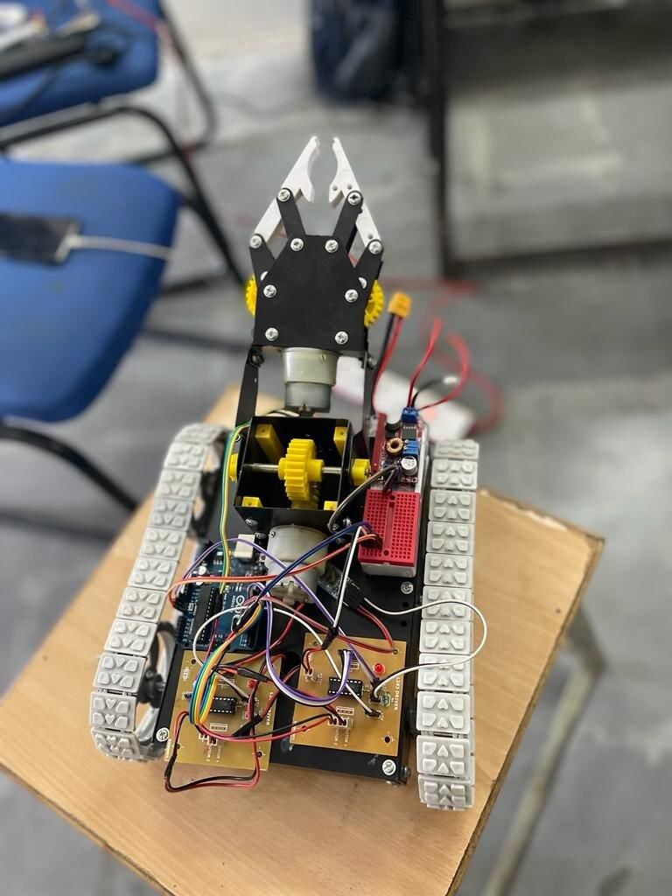
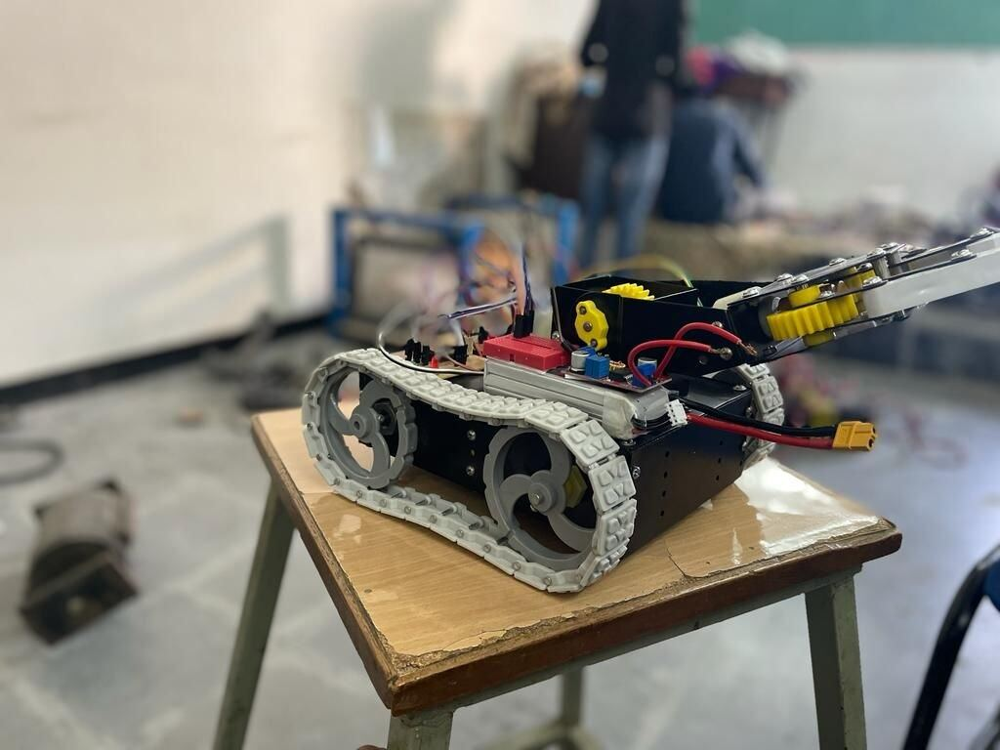

13 / FIELD ROBOTICS
Mars Rover
A belt-driven rover built as a small-scale replica of an uncrewed all-terrain vehicle.
- Role
- Build and integration
- Context
- Independent build, Nov – Dec 2021
- Tools
- Belt drives, chassis fabrication, manipulator, Arduino, remote operation
- Scope
- A tracked platform intended to work across craters and plateaus
- Output
- A driven rover with a manipulator arm mounted on the deck
- Skills
- Belt-drive locomotion
- Chassis fabrication
- Manipulator integration
- Arduino
- Remote operation
A belt-run bot designed to work in varied conditions, from the craters of the moon to the plateaus of Mars. The build is a small-scale replica of what a fully functional uncrewed all-terrain vehicle would need to be.
Belt drives give continuous ground contact over loose and broken surfaces, and a manipulator arm on the deck lets the rover pick up and move samples.


Belt-drive locomotionDeck-mounted manipulatorRemote operated
Belt-drive locomotionChassis fabricationManipulator integrationArduino